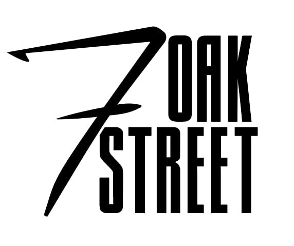
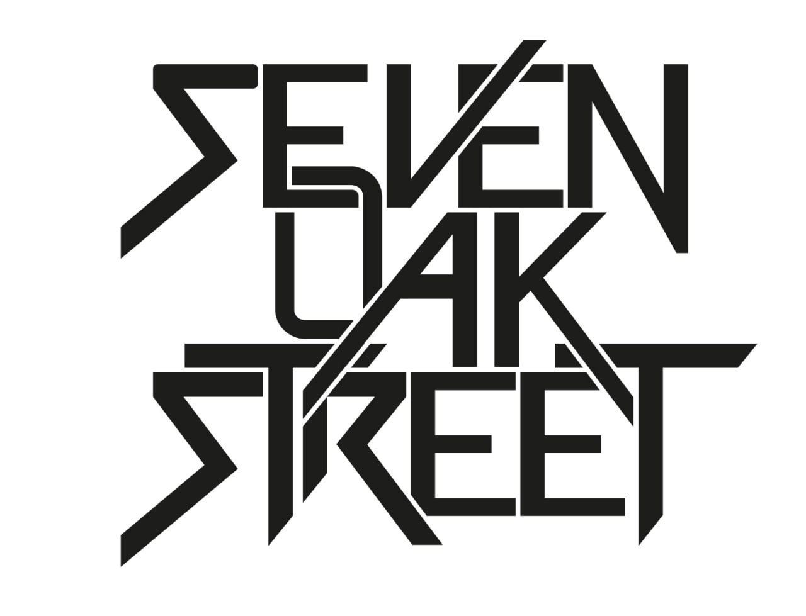

Logos
I enjoy creating logos that help give projects, bands, and organizations a clear visual identity. My process usually starts with sketches and ideas, exploring different directions before developing a final mark.


Seven Oak Street
Two logo concepts created for Seven Oak Street, an Austrian rock band. The designs explored different approaches, and the first option was chosen by the band as their official logo.
Alma Rose Quartett
Logo designed for Alma Rosé Quartett as part of a complete visual identity, which also included photography, website design, and printed materials. The logo was developed as my final study project.